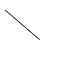
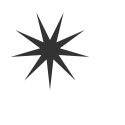

arrow()
Syntax
arrow(x, y, width, type=NORMAL, draw=True)
Description
Draws an arrow to the screen. The first two parameters set the location (measured from
the arrow’s head), the third sets the width. Optionally you can define the arrow type
with the fourth parameter. By default the arrow type is NORMAL, but there is also a
trendier FORTYFIVE version.
Returns
BezierPath containing the arrow
Tutorial
Example
fill(0.2) arrow(50, 50, 50) |
image()
Syntax
image(path, x, y, width=None, height=None, alpha=1.0, data=None)
Description
Draws an image to the screen. An image is a JPEG-, GIF-, PNG-, AI-, EPS-, TIF-, PSD-, or
PDF-file stored on disk. For vector works, EPS is the best format to use. The first
parameter sets the pathname of the image file. By default, NodeBox looks for files in the
Home folder, or the folder where the NodeBox file is saved. The following two parameters
set the location of the image. The fourth and fifth parameters are optional and define
the width and height of the image. When set, the image is scaled to the given width and
height. The sixth parameter is optional as well, and sets the alpha (opacity) value for
the image. This value ranges between 0.0 and 1.0. The last optional parameter is used
when supplying an image as a data stream instead of a file path.
Example

|
image("superfolia.jpg", 50, 0) |
imagesize()
Syntax
imagesize(path)
Description
Returns the dimensions (width and height) of an image located at the given path.
Obtaining the size of an image is useful when the image needs to scaled to an exact size,
for example. The return value is a list with the image’s width and the image’s height.
Returns
a tuple with the width and height of the given image
Example
w, h = imagesize("superfolia.jpg") print w print h |
line()
Syntax
line(x1, y1, x2, y2, draw=True)
Description
Draws a line to the screen. A line is a straight path between two points. The first two
parameters set the location of the first point (origin), the following two parameters set
the location of the second point (destination). You will not notice a line if it’s
stroke() is the same as the background color, or if the
line’s strokewidth() is zero.
Returns
BezierPath containing the line
Tutorial
Example
|  |
stroke(0.2) strokewidth(2) line(10, 20, 80, 80) |
oval()
Syntax
oval(x, y, width, height, draw=True)
Description
Draws an oval (ellipse) to the screen. An oval with an equal width and height makes a
circle. The first two parameters set the location (measured from the oval’s top-left),
the third sets the width, and the fourth sets the height.
Returns
BezierPath containing the oval
Tutorial
Example

|
fill(0.2) oval(10, 20, 40, 40) |
rect()
Syntax
rect(x, y, width, height, roundness=0.0, draw=True)
Description
Draws a rectangle to the screen. The first two parameters set the location (measured from
the rectangle’s top-left corner), the third sets the width, and the fourth sets the
height. An optional fifth parameter controls the corner roundness of the rectangle.
Returns
BezierPath containing the rectangle
Tutorial
Example

|
fill(0.2) rect(10, 20, 60, 40) |
star()
Syntax
star(x, y, points=20, outer=100, inner=50, draw=True)
Description
Draws a star to the screen. The first two parameters set the location, measured from the
star’s center. There are three optional parameters that set the number of points, the
outer radius and the inner radius (the fill radius).
Returns
BezierPath containing the star
Tutorial
Example
|  |
fill(0.2) star(50, 50, 9, 40, 10) |